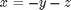
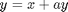
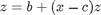
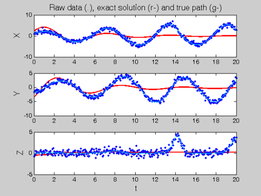
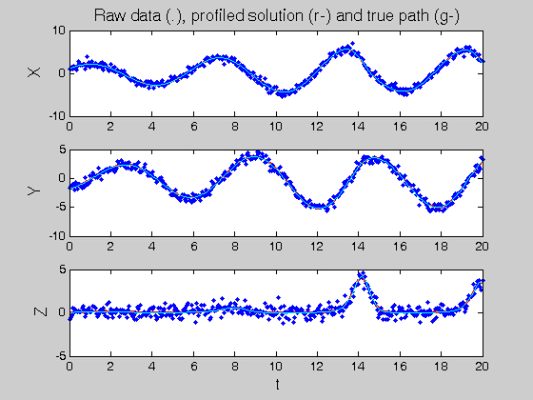
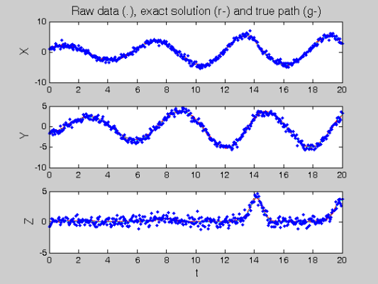

Profile Estimation Experiments - the Rossler Equations
This page provides code to run profiled parameter estimation on data generated by the Rossler equations. It follows the same format as FhNEx.html and has commentary has therefore been kept to a minimum.
The Rossler equations are given by



Contents
- RHS Functions
- Various parameters
- Observation times
- Create trajectories
- Set up observations
- Fitting parameters
- Profiling optimisation control
- Setting up functional data objects
- Smooth the data
- Re-smoothing with model-based penalty
- Perform the Profiled Estimation
- Plot Smooth with Profile-Estimated Parameters
- Comparison with Smooth Using True Parameters
- Squared Error Performance
- Calculate Sample Information and Variance-Covariance Matrices
RHS Functions
odefn = @rossfunode; % Function for ODE solver fn.fn = @rossfun; % RHS function fn.dfdx = @rossdfdx; % Derivative wrt inputs fn.dfdp = @rossdfdp; % Derviative wrt parameters fn.d2fdx2 = @rossd2fdx2; % Hessian wrt inputs fn.d2fdxdp = @rossd2fdxdp; % Hessian wrt inputs and parameters fn.d2fdp2 = @rossd2fdp2; % Hessian wrt parameters. fn.d3fdx3 = @rossd3fdx3; % Third derivative wrt inputs. fn.d3fdx2dp = @rossd3fdx2dp; % Third derivative wrt intputs, inputs and pars. fn.d3fdxdp2 = @rossd3fdxdp2; % Third derivative wrt inputs, pars and pars.
Various parameters
y0 = [1.13293; -1.74953; 0.02207]; % Initial conditions pars = [0.2; 0.2; 3]; % Parameters sigma = 0.5; % Noise Level jitter = 0.2; % Perturbation for starting startpars = pars + jitter*randn(length(pars),1); % parameter estimates disp(['Initial par. values: ',num2str(startpars')])
Initial par. values: -0.39343 0.59033 2.6905
Observation times
tspan = 0:0.05:20; % Observation times obs_pts{1} = 1:length(tspan); % Which components are observed at obs_pts{2} = 1:length(tspan); % which observation times. obs_pts{3} = 1:length(tspan); tfine = 0:0.05:20; % Times to plot solutions
Create trajectories
odeopts = odeset('RelTol',1e-13);
[full_time,full_path] = ode45(odefn,tspan,y0,odeopts,pars);
[plot_time,plot_path] = ode45(odefn,tfine,y0,odeopts,pars);
Set up observations
Tcell = cell(1,size(full_path,2)); path = Tcell; for i = 1:length(obs_pts) Tcell{i} = full_time(obs_pts{i}); path{i} = full_path(obs_pts{i},i); end % add noise Ycell = path; for i = 1:length(path) Ycell{i} = path{i} + sigma*randn(size(path{i})); end % and set wts wts = []; if isempty(wts) % estimate wts if not given for i = 1:length(Ycell) if ~isempty(Ycell{i}) wts(i) = 1./sqrt(var(Ycell{i})); else wts(i) = 1; end end end
Fitting parameters
lambda = 1e4; % Smoothing for model-based penalty lambda = lambda*wts; lambda0 = 1; % Smoothing for 1st-derivative penalty nknots = 401; % Number of knots to use. nquad = 5; % No. between-knots quadrature points. norder = 3; % Order of B-spline approximation
Profiling optimisation control
lsopts_out = optimset('DerivativeCheck','off','Jacobian','on',... 'Display','iter','MaxIter',1000,'TolFun',1e-8,'TolX',1e-10); % Other observed optimiation control lsopts_other = optimset('DerivativeCheck','off','Jacobian','on',... 'Display','iter','MaxIter',1000,'TolFun',1e-14,'TolX',1e-14,... 'JacobMult',@SparseJMfun); % Optimiation control within profiling lsopts_in = optimset('DerivativeCheck','off','Jacobian','on',... 'Display','off','MaxIter',1000,'TolFun',1e-14,'TolX',1e-14,... 'JacobMult',@SparseJMfun);
Setting up functional data objects
% set up knots range = [min(full_time),max(full_time)]; % range of observations knots_cell = cell(size(path)); % knots for each basis knots_cell(:) = {linspace(range(1),range(2),nknots)}; % set up bases basis_cell = cell(1,length(path)); % Create cell arrays. Lfd_cell = cell(1,length(path)); nbasis = zeros(length(path),1); bigknots = knots_cell{1}; % bigknots used for quadrature points nbasis(1) = length(knots_cell{1}) + norder - 2; for i = 2:length(path) bigknots = [bigknots knots_cell{i}]; nbasis(i) = length(knots_cell{i}) + norder -2; end quadvals = MakeQuadPoints(bigknots,nquad); % Create simpson's rule % quadrature points and values for i = 1:length(path) basis_cell{i} = MakeBasis(range,nbasis(i),norder,... % create bases knots_cell{i},quadvals,1); % with quadrature Lfd_cell{i} = fdPar(basis_cell{i},1,lambda0); % pts attatched end
Smooth the data
DEfd = smoothfd_cell(Ycell,Tcell,Lfd_cell); coefs = getcellcoefs(DEfd); figure(1) devals = eval_fdcell(tfine,DEfd,0); for i = 1:length(path) subplot(length(path),1,i); plot(Tcell{i},Ycell{i},'b.'); hold on; plot(tfine,devals{i},'r','LineWidth',2); if i==1 ylabel('\fontsize{13} X') title(['\fontsize{13} Raw data (.), ', ... 'and smooth fit (r-)']) elseif i==2 ylabel('\fontsize{13} Y') else xlabel('\fontsize{13} t') ylabel('\fontsize{13} Z') end end

Re-smoothing with model-based penalty
% Call the Gauss-Newton solver [newcoefs,resnorm2] = lsqnonlin(@SplineCoefErr,coefs,[],[],lsopts_other,... basis_cell,Ycell,Tcell,wts,lambda,fn,[],startpars); tDEfd = Make_fdcell(newcoefs,basis_cell); % Plot results along with exact solution figure(2) devals = eval_fdcell(tfine,tDEfd,0); for i = 1:length(path) subplot(length(path),1,i); plot(tfine,devals{i},'r','LineWidth',2); hold on; plot(Tcell{i},Ycell{i},'b.'); plot(plot_time,plot_path(:,i),'c'); hold off if i==1 ylabel('\fontsize{13} X') title(['\fontsize{13} Raw data (.), ', ... 'exact solution (r-) and true path (g-)']) elseif i==2 ylabel('\fontsize{13} Y') else xlabel('\fontsize{13} t') ylabel('\fontsize{13} Z') end end
Norm of First-order
Iteration Func-count f(x) step optimality CG-iterations
0 1 394169 2.79e+004
1 2 99997 10 1.25e+004 20
2 3 79828.5 20 5.63e+003 191
3 4 46155.6 20 2.03e+004 122
4 5 8186.78 20 7.67e+003 98
5 6 2428.9 9.65946 457 90
6 7 2203.72 0.618387 10.3 58
7 8 2203.72 3.79297 10.3 298
8 9 2199.64 0.948242 8.41 0
9 10 2197.91 1.89648 24.3 310
10 11 2194.57 0.120914 1.05 104
11 12 2194.27 0.90216 15.5 307
12 13 2194.2 0.00665249 0.363 39
13 14 2194.19 0.0787662 0.0724 308
14 15 2194.19 0.00788232 0.00217 308
15 16 2194.19 0.00120445 0.000417 305
16 17 2194.19 0.000156582 1.85e-005 310
17 18 2194.19 2.32721e-005 3.18e-006 323
18 19 2194.19 3.24996e-006 3.81e-007 308
Optimization terminated: relative function value
changing by less than OPTIONS.TolFun.
 Perform the Profiled Estimation
[newpars,newDEfd_cell] = Profile_GausNewt(startpars,lsopts_out,DEfd,fn,... lambda,Ycell,Tcell,wts,[],lsopts_in); disp(['New parameter values: ',num2str(newpars')]);
Iteration steps Residual Improvement Grad-norm parameters
1 1 1595.94 0.258366 1.45e+003 0.22024 0.10805 -0.83679
2 1 937.855 0.412351 736 -0.11996 -0.025297 -0.60428
3 1 574.892 0.387014 423 0.065897 -0.088672 -0.78048
4 1 494.057 0.14061 1.23 0.077089 -0.033005 -0.68246
5 1 364.881 0.26146 30.8 0.11369 -0.079087 0.54754
6 1 234.323 0.357809 210 0.14755 0.00091124 2.1928
7 1 183.119 0.218521 38.2 0.18784 0.097777 2.8046
8 1 168.605 0.0792593 15.4 0.19623 0.19162 3.0458
9 1 167.481 0.0066671 0.241 0.20127 0.22129 3.0709
10 1 167.478 1.49973e-005 0.00159 0.20134 0.22207 3.0691
11 1 167.478 2.53113e-010 0.000104 0.20134 0.22208 3.0692
New parameter values: 0.20134 0.22208 3.0692
Plot Smooth with Profile-Estimated Parameters
devals = eval_fdcell(tfine,newDEfd_cell,0); figure(3) for i = 1:length(path) subplot(length(path),1,i) plot(tfine,devals{i},'r','LineWidth',2); hold on; plot(Tcell{i},Ycell{i},'b.'); plot(plot_time,plot_path(:,i),'c'); hold off if i==1 ylabel('\fontsize{13} X') title(['\fontsize{13} Raw data (.), ', ... 'profiled solution (r-) and true path (g-)']) elseif i==2 ylabel('\fontsize{13} Y') else xlabel('\fontsize{13} t') ylabel('\fontsize{13} Z') end end
Comparison with Smooth Using True Parameters
coefs = getcellcoefs(DEfd); % Starting coefficient estimates [truecoefs,resnorm4] = lsqnonlin(@SplineCoefErr,coefs,[],[],... lsopts_other,basis_cell,Ycell,Tcell,wts,lambda,fn,[],pars); trueDEfd_cell = Make_fdcell(truecoefs,basis_cell); figure(4) devals = eval_fdcell(tfine,trueDEfd_cell,0); for i = 1:length(path) subplot(length(path),1,i) plot(plot_time,plot_path(:,i),'c') plot(tfine,devals{i},'r','LineWidth',2); hold on; plot(plot_time,plot_path(:,i),'c'); plot(Tcell{i},Ycell{i},'b.'); hold off; if i==1 ylabel('\fontsize{13} X') title(['\fontsize{13} Raw data (.), ', ... 'exact solution (r-) and true path (g-)']) elseif i==2 ylabel('\fontsize{13} Y') else xlabel('\fontsize{13} t') ylabel('\fontsize{13} Z') end end
Norm of First-order
Iteration Func-count f(x) step optimality CG-iterations
0 1 139787 1.52e+004
1 2 4324.36 3.46001 1.3e+003 10
2 3 405.558 2.58193 162 38
3 4 196.091 2.80419 224 150
4 5 180.1 2.50509 566 253
5 6 170.573 0.0261129 15 13
6 7 168.846 0.857847 8.97 365
7 8 168.657 0.464041 16.1 493
8 9 168.651 0.000702364 0.327 15
9 10 168.649 0.0279744 0.101 376
10 11 168.649 0.00890752 0.00462 548
11 12 168.649 0.000516013 0.000127 448
12 13 168.649 0.000129249 1.14e-005 573
13 14 168.649 1.4119e-005 1.5e-005 603
14 15 168.649 7.91941e-008 2.73e-006 57
Optimization terminated: relative function value
changing by less than OPTIONS.TolFun.
 Squared Error Performance
% Squared error for estimated parameters newpreds = eval_fdcell(Tcell,newDEfd_cell,0); new_err = cell(length(newpreds)); for i = 1:length(path) new_err{i} = wts(i)*(newpreds{i} - Ycell{i}).^2; end new_err = mean(cell2mat(new_err)); % Squared error for true parameters truepreds = eval_fdcell(Tcell,trueDEfd_cell,0); true_err = cell(length(truepreds)); for i = 1:length(path) true_err{i} = wts(i)*(truepreds{i} - Ycell{i}).^2; end true_err = mean(cell2mat(true_err)); % print out a comparsion disp(['Estimated sqrd error: ',num2str(new_err)]) disp(['True sqrd error: ',num2str(true_err)]);
Estimated sqrd error: 0.13922 True sqrd error: 0.1395
Calculate Sample Information and Variance-Covariance Matrices
% Hessian of squared error with respect to parameters d2Jdp2 = make_d2jdp2(newDEfd_cell,fn,Ycell,Tcell,lambda,newpars,[],wts); % Second derivatives with respect to parameters and observations d2JdpdY = make_d2jdpdy(newDEfd_cell,fn,Ycell,Tcell,lambda,newpars,[],wts); % Resulting derivative of parameters with respect to observations dpdY = -d2Jdp2\d2JdpdY; % Variance of observations: S = make_sigma(DEfd,Tcell,Ycell,0); % Resulting parameter covariance matrix: Cov = dpdY*S*dpdY'; % Standard errors StdDev = sqrt(diag(Cov)); % Correlations Corr = Cov./(StdDev*StdDev'); % Display these results disp('Approximate covariance matrix for parameters:') disp(num2str(Cov)) disp('Approximate standard errors of parameters:') disp(num2str(StdDev')) disp('Approximate correlation matrix for parameters:') disp(num2str(Corr))
Approximate covariance matrix for parameters:
1.2131e-005 4.1516e-005 0.000128
4.1516e-005 0.00028311 0.00083986
0.000128 0.00083986 0.0031182
Approximate standard errors of parameters:
0.003483 0.016826 0.055841
Approximate correlation matrix for parameters:
1 0.70841 0.65813
0.70841 1 0.89386
0.65813 0.89386 1